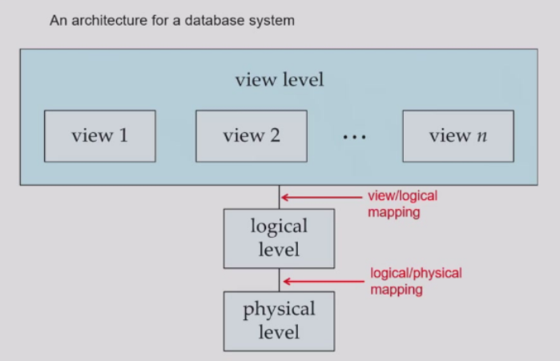

Introduction
约 714 个字 1 张图片 预计阅读时间 2 分钟
Tip
';DROP/**/TABLE/**/users;# 😶🌫️
Database Management System(DBMS)
- 数据库系统负责管理有高价值的、体量相对较大的、可被多个用户同时使用的数据。
- 应用场景广泛存在于我们的生活之中。
直接建立在文件系统之上的DBS存在的问题
- 数据冗余与不一致
- 存取数据困难
- 数据孤立(Data isolation)
- 文件与格式多样
- 完整性问题
- 程序无法显式声明完整性约束
- Hard to add new constraints or change existing ones
- 原子性问题(Atomicity of updates)
- Failures may leave database in an inconsistent state with partial updates carried out.
- 比如从A银行转出50元到B银行，那么
从A银行账户扣除50元与给B银行账户充值50元两件事必须要么同时发生，要么还没有发生，但是这是很难实现的。
- 并发访问异常
- Uncontrolled concurrent accesses can lead to inconsistent.
- 安全性问题
- 由此可见，DBMS应该满足如下特征：
- 数据持久性
- 数据访问便利性
- 数据完整性
- 多用户并发控制
- 故障恢复
- 安全控制
View of Data
Note
A major purpose of a database system is to provide users with an abstract view of the data.
数据模型（数据/语义/联系/约束）
- Relational Model（关系模型）
- All the data is stored in various tables.
- Entity-Relationship Model（实体-联系模型）
- Semi-structured data model(XML)（半结构化数据模型）
- Object-based data models（基于对象的数据模型）
数据抽象
- Hide the complexity of data structures to represent data in the database from users through several levels of data abstraction.
- 抽象层次
- 物理层： 数据是怎么存储的
- 逻辑层： 数据之间的关系与逻辑
- 视图层： 数据库的应用
结构图

Schemas and Instances
- 模式（数据库总体设计）分为逻辑模式和物理模式
- 实例
- the actual content of the database at a particular point in time.
Database Language
- Data Definition Language(DDL)
- DDL compiler generates a set of table templates stored in a data dictionary.
- 数据字典包含元数据(metadata)
- Database schema
- Integrity constraints
- Authorization
DDL in SQL
- CREATE：用于创建数据库或表。
- ALTER：用于修改现有的数据库对象。
- DROP：用于删除数据库或表。
- TRUNCATE：用于删除表中的所有数据，但不删除表本身。
- Data Manipulation Language(DML)
- 过程式数据操作语言(Procedural)
- 需要数据和获取数据的方式
- 陈述式数据操作语言(Declarative/nonprocedural)
- 需要数据但不需要获取数据的方式
- The portion of a DML that involves information retrievals is called a query languange.
- SQL query language(并非图灵完备)
- 过程式数据操作语言(Procedural)
DML in SQL
- INSERT：用于向表中插入新数据。
- UPDATE：用于更新表中的数据。
- DELETE：用于删除表中的数据。
Database Engine
Storage manager（存储管理）
- Interaction with the OS file manager
- Efficient storing,retrieving and updating of data
Query processor（查询处理）
- Parsing and translation
- Optimization
- Evaluation
Transaction management（事务管理）
- It ensures that the database remains in a consistent state despite system failures and transaction failures.